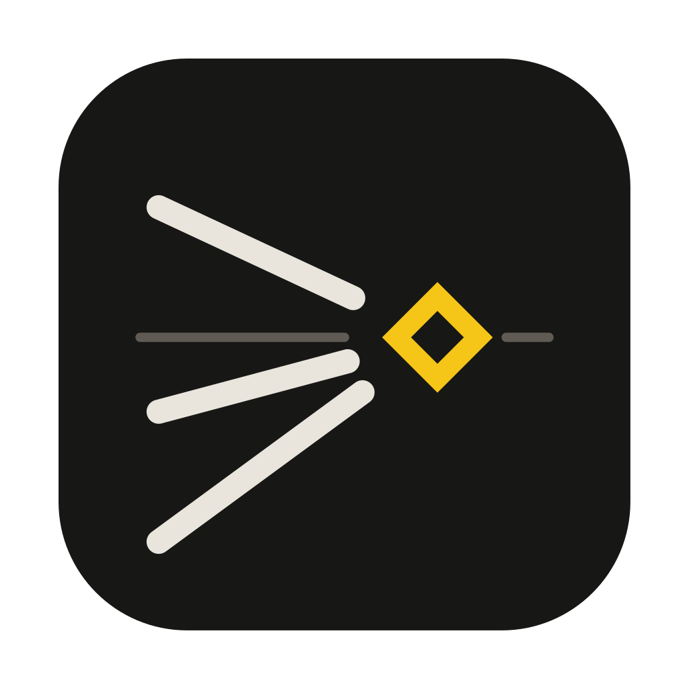
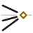

The mark is the method.
Fuga solves a camera from the lines in a photo that run parallel in the real world. In the picture they converge on a vanishing point — ponto de fuga in Portuguese, where the name comes from.
The mark draws exactly that and nothing else: a horizon, one edge above it (a ceiling), two below (a floor), and the point. The edges stop short of the point. Your eye finishes the convergence — the same job the app does with your lines.
The point is the only colour. It is the thing you are looking for.

App iconClear space around any logo equals the diamond's width (8.8 units of the 48 grid). Minimum size: mark 24 px, lockup 96 px wide; below 24 px use the favicon variant, which drops the horizon.
The wordmark is set in IBM Plex Mono Medium and spaced by the letters' ink, not their advance widths, so the gaps look even. It is outlined in the SVGs and never retyped.
One colour means something.
The interface is warm greys. Signal yellow is reserved for the point in the logo and for whatever is under your hand in the app — the handle you drag, the update notice. Axis colours follow the X/Y/Z = red/green/blue habit every 3D artist already has.
dark ground
light ground
ink on dark
ink on light
on dark only
on light
Contrast ratios are WCAG 2.x against each ground. Any text must be ≥ 4.5 : 1; "decorative only" greys are for hairlines and disabled states, never for words.
Interface text, headings, documentation. Condensed so a dense inspector still breathes.
Numbers, measurements, section labels in spaced capitals (06 CAMERA), the wordmark. Tabular figures, so columns of values line up like a readout.
Both are open source (SIL Open Font License) and ship with the app, so it looks identical offline on every system.
Hairlines, not boxes. 1 px rules separate content; corners are 2 px; no shadows, no gradients, no glass. Motion is short (≤ 150 ms) and only confirms an action. The photo is always the most colourful thing on screen.

Sounds like
- "Trace the edges. Get the camera."
- "Lines of VP 1 disagree by 0.42° — check their placement."
- "Sensor width only changes the millimetre readout, never the framing."
Principles
- Short and exact. Numbers with units.
- Say what happened and what to do next.
- No hype, no exclamation marks, no "magic".
- Credit the people and tools Fuga stands on.